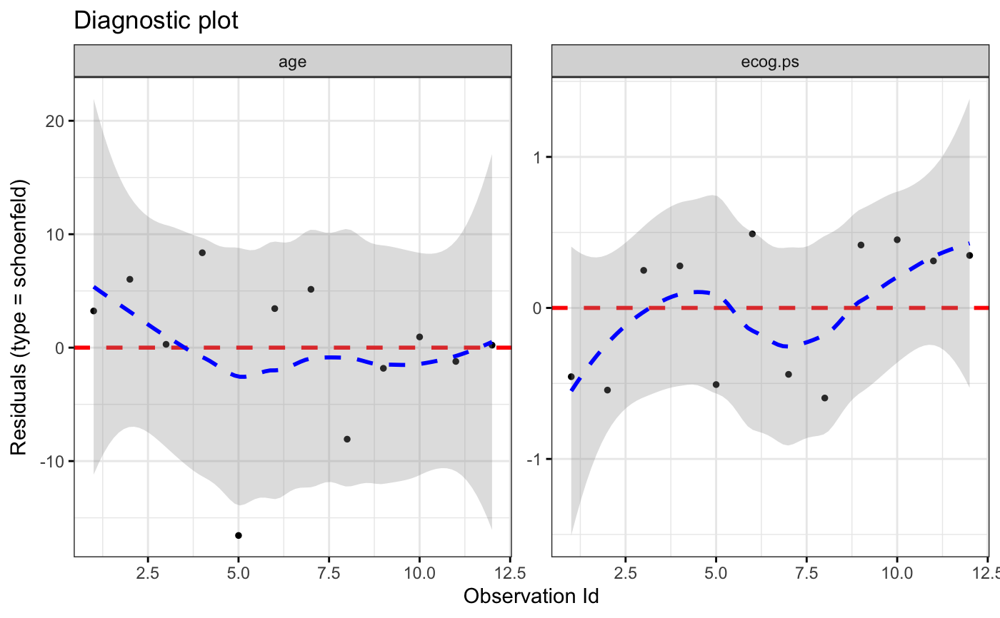

Diagnostic Plots for Cox Proportional Hazards Model with ggplot2
Displays diagnostics graphs presenting goodness of Cox Proportional Hazards Model fit, that can be calculated with coxph function.
ggcoxdiagnostics(fit, type = c("martingale", "deviance", "score", "schoenfeld", "dfbeta", "dfbetas", "scaledsch", "partial"), ..., linear.predictions = TRUE, hline = TRUE, hline.col = "red", hline.size = 1, hline.alpha = 1, hline.yintercept = 0, hline.lty = "dashed", point.col = "black", point.size = 1, point.shape = 19, point.alpha = 1, font.main = c(16, "plain", "black"), font.x = c(14, "plain", "black"), font.y = c(14, "plain", "black"), font.tickslab = c(12, "plain", "black"), ggtheme = ggplot2::theme_bw())
Arguments
- fit
- an object of class coxph.object - created with coxph function.
- type
- the type of residuals to present on Y axis of a diagnostic plot.
The same as in residuals.coxph: character string indicating the type of
residual desired. Possible values are
"martingale", "deviance", "score", "schoenfeld", "dfbeta", "dfbetas"and"scaledsch". Only enough of the string to determine a unique match is required. - ...
- furthere arguments passed to residuals.coxph.
- linear.predictions
- a logical value indicating whether to show linear
predictions for observations (
TRUE) or just indexed of observations (FALSE) on X axis. - hline
- a logical - should the horizontal line be added to highlight the
Y=0level. - hline.col, hline.size, hline.lty, hline.alpha, hline.yintercept
- color, size, linetype, visibility and Y-axis coordinate to be used for geom_hline.
Used only when
hline = TRUE. - point.col, point.size, point.shape, point.alpha
- color, size, shape and visibility to be used for points.
- font.main, font.x, font.y, font.tickslab
- a vector of length 3 indicating respectively the size (e.g.: 14), the style (e.g.: "plain", "bold", "italic", "bold.italic") and the color (e.g.: "red") of main title, xlab and ylab and axis tick labels, respectively. For example font.x = c(14, "bold", "red"). Use font.x = 14, to change only font size; or use font.x = "bold", to change only font face.
- ggtheme
- function, ggplot2 theme name. Default value is ggplot2::theme_bw().
Allowed values include ggplot2 official themes: see
theme.
Value
Returns an object of class ggplot.
Functions
-
ggcoxdiagnostics: Diagnostic Plots for Cox Proportional Hazards Model with ggplot2
Examples
if(require(RTCGA.clinical)){ # TCGA data exmaple (http://cancergenome.nih.gov/) # source("https://bioconductor.org/biocLite.R") # biocLite("RTCGA.clinical") # data for examples # library(RTCGA.clinical) # also loads 'RTCGA' package survivalTCGA(BRCA.clinical, OV.clinical, extract.cols = c("admin.disease_code", "patient.days_to_birth")) -> BRCAOV.survInfo BRCAOV.survInfo$age <- round((-as.numeric(BRCAOV.survInfo$patient.days_to_birth))/365,2) library(survival) coxph.fit <- coxph(Surv(times, patient.vital_status) ~ admin.disease_code + age, data = BRCAOV.survInfo) ggcoxdiagnostics(coxph.fit, ggtheme = theme_dark(), point.col = "white", point.aplha = 0.3) ggcoxdiagnostics(coxph.fit, ggtheme = theme_RTCGA(), # library(RTCGA.clinical) type = "deviance") + ylab('Deviance Residuals') ggcoxdiagnostics(coxph.fit, ggtheme = theme_light(), linear.predictions = FALSE) # ggcoxdiagnostics(coxph.fit, ggtheme = theme_void(), type = "deviance", linear.predictions = FALSE) }# traditional example library(survival) coxph.fit2 <- coxph(Surv(futime, fustat) ~ age + ecog.ps, data=ovarian) ggcoxdiagnostics(coxph.fit2, type = "deviance")